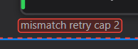
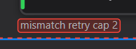
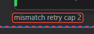
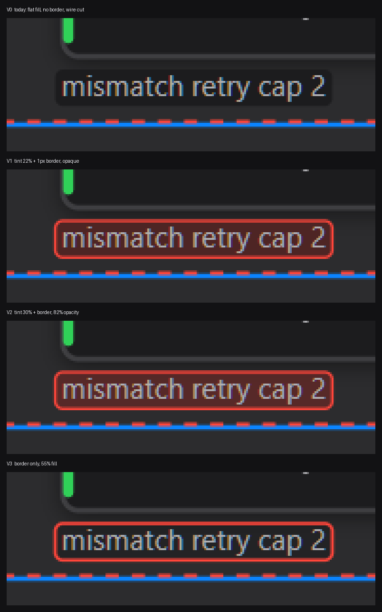

Rule R3: a label box should be tinted from the wire it belongs to. Commander Ben's rule, 2026-09-16.
mismatch retry cap 2 on the red security wire.
Pick the one that reads best. Benji recommends V1.
22% tint from the wire, 1px border in the wire's colour. Best text contrast.

30% tint, 82% opacity. Warmer, slightly less contrast on the text.

Loudest border, 55% fill. Border pops most, text reads least.


| Flip between | The question you are answering |
|---|---|
| V0 → V1 | Does a coloured border make the label belong to its wire? |
| V1 → V2 | Is more tint better, or does it hurt the text? |
| V1 → V3 | Is a louder border with a lighter fill better, or worse to read? |
| R4 is not proven here. | In this crop the label sits beside its route, not on it. The “box cutting the line” fault needs an edge where the label truly overlaps its own wire. That mock-up is still owed. |
| This will break a check. | P3 DECLARED_VS_DELIVERED compares painted colour against
the declared token. Tinting the box fails P3 until its declaration is
updated to say “label box equals its wire”. That is the check
doing its job, not a reason to stop. |